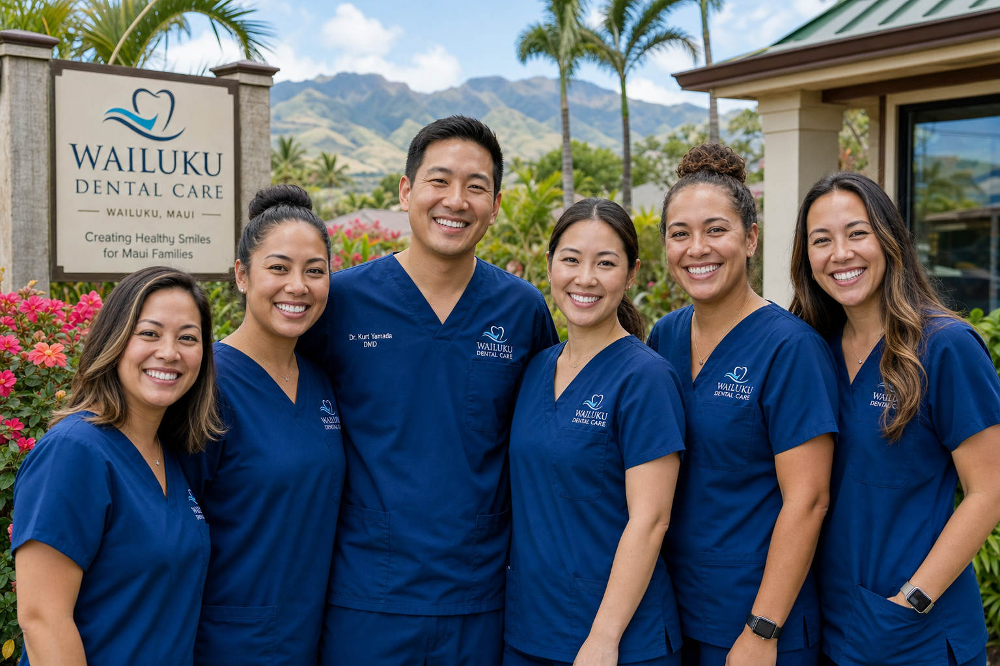

Compassionate family dentistry in Wailuku, Maui since 2010.

Aloha Smile Dental opened its doors in 2010 under the care of Dr. Lani Kahale, a Maui native who earned her dental degree from UH John A. Burns School of Medicine and completed her residency in pediatric dentistry in Seattle before returning home to Wailuku. Her vision was simple: bring the warmth of aloha to every dental visit.
We believe that fear and anxiety about dental visits often stems from past negative experiences. Our entire practice is designed to change that — from our calming ocean-themed decor to our gentle technique and the time we take to explain every step of treatment before doing it.
Today we serve over 3,200 patients across Maui, from newborns visiting for their first tooth check to grandparents maintaining their smiles into their 80s and beyond.
We minimize discomfort at every step. Our patients consistently tell us we've changed how they feel about dental visits.
We explain what we find, what we recommend, and why — in plain language. No dental jargon, no surprises.
From babies to seniors, every age group receives care tailored to their needs. One practice for your whole ohana.
You'll never be rushed. We take the time to build relationships with our patients and their families.
Founder & Lead Dentist
Pediatric & General Dentistry
Associate Dentist
Cosmetic & Restorative
Lead Hygienist
15 years experience
Hygienist
Pediatric specialist